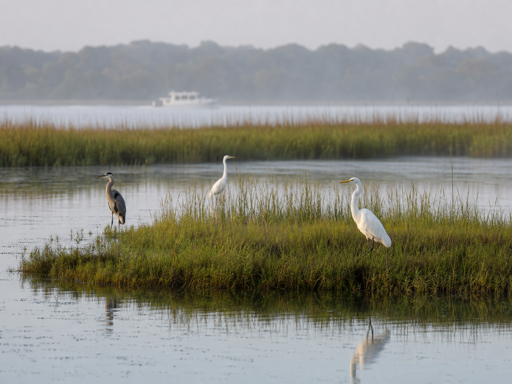
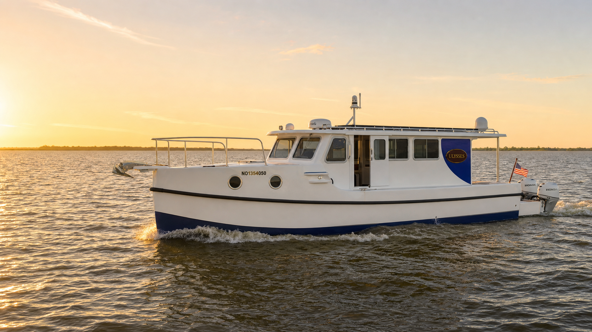
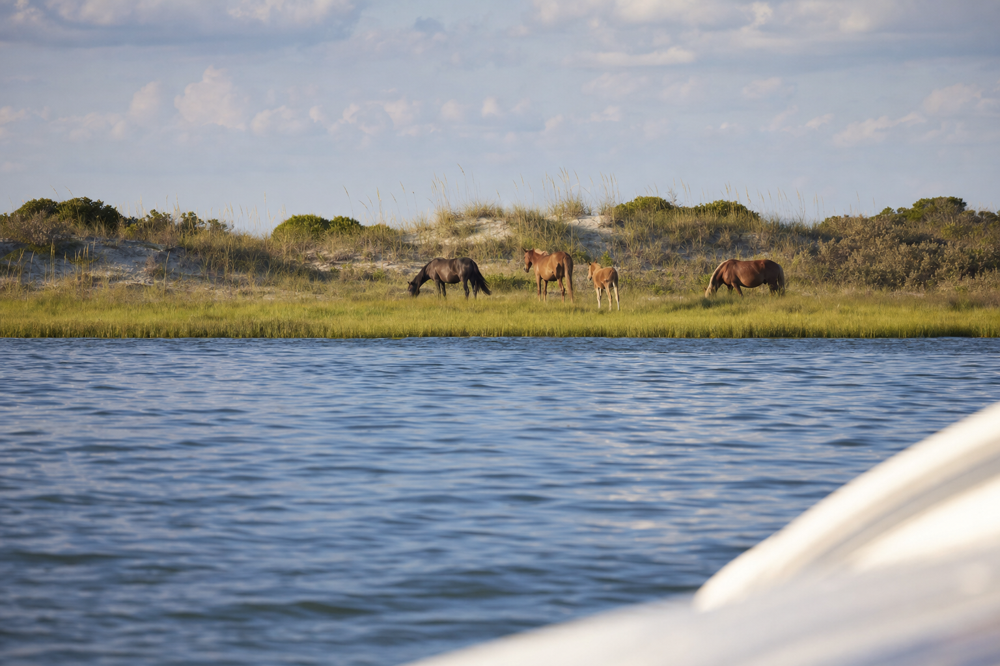
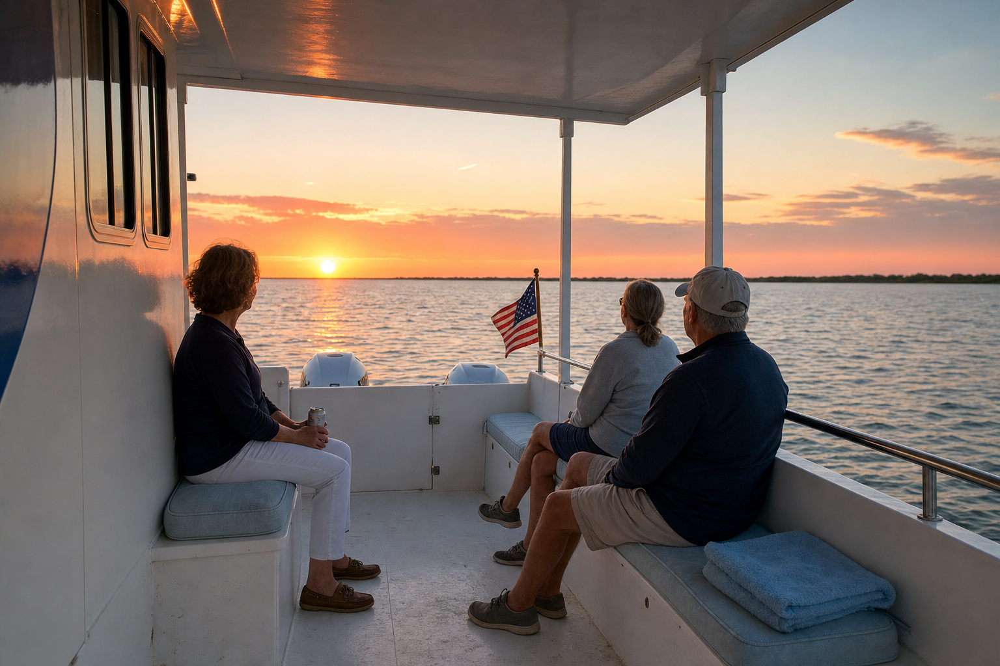
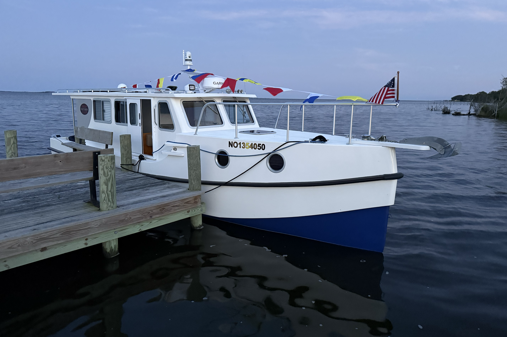
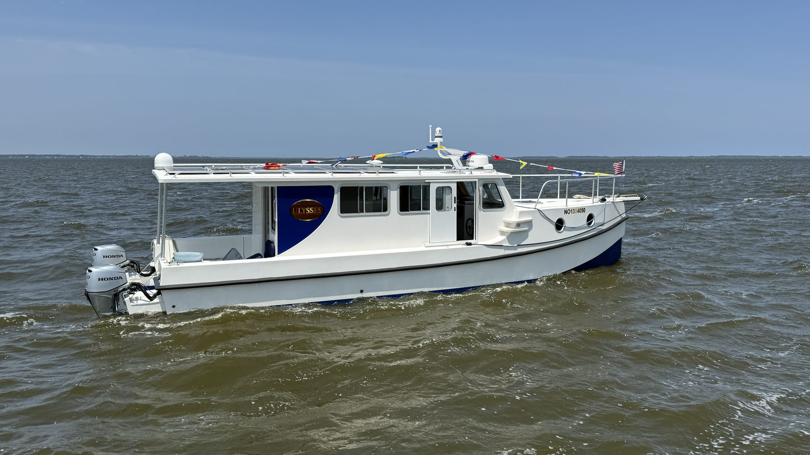

Nature views and quiet water
Guided Sound Tours
Marsh edges, open water, birds, and soundside context.
Request a Sound Tour
Private, specialized, expeditionary inland voyages for up to 6 guests: observe the flora and fauna of northeastern North Carolina, travel by safe waterborne transportation (water taxi), and choose dock-and-dine trip combinations from local partner restaurants accessible by water.
Curated voyages planned with the customer, with due regard to weather conditions, water levels, navigable access, and the desired theme or experience you seek.

Marsh edges, open water, birds, and soundside context.
Request a Sound Tour
Distant, responsible viewing from the water when conditions allow.
Ask About Horse Viewing
Early and late light over calm protected water.
Plan a Sunset Cruise
Dinner plans by water when dockage and timing line up.
Plan a Dock-and-Dine Charter
A captain-reviewed plan for a specific group or route.
Request a Custom CharterCurrituck is not an ocean thrill ride. It is protected water, marsh grass, navigation posts, quiet wildlife, and broad sunset light.
Ulysses is a Great Harbour TT35 with shallow draft, a protected cabin, and a small-group layout suited to the Currituck Sound.
Review dock and pickup context before booking, then check the practical questions guests ask most often.
See planned pickup areas, partner docks, and the confirmation notes for each location.
View pickup mapFind weather, wildlife, access, guest, and onboard-details guidance in one place.
Read safety and FAQHorse viewing stays patient, quiet, and offshore. Sightings are possible, not promised.
For dock-and-dine outings, special pickup arrangements, accessibility needs, wildlife-focused trips, or another route that needs captain review, send a custom inquiry.